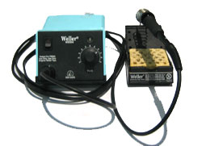
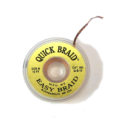
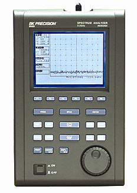
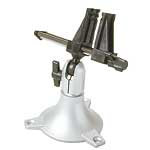
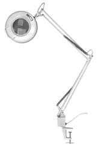

Each step of the project has a parts list, assorted assembly photos/videos and testing procedures. The parts list is as complete as possible, with suggested parts and cost. Many parts can be sampled for free or low cost, but this is starting to become harder and harder. Parts may have to be purchased in larger quantities than necessary, and I always suggest getting twice as many parts as you'll need in case something goes wrong.
Total cost should be ~$25 for PCBs and $100 for parts (if you sample chips) or $135 (buy all parts & use a nice lithium ion battery).
I would highly suggest getting a resistor kit in both 1206 and 0603 from Digikey which, if you dont have yet, will make doing SMT work less painful. Then you can skip on getting individual values.
Corrections, updates and suggestions are very welcome should be posted to the forum.
There are a few tools that are required for assembly. If you don't have them, now would be a good time to borrow or purchase them. They are very very handy whenever assembling/fixing/modifying electronic devices!
 |
Soldering iron. Because of the many small parts, a WES-50/WES-51 and the other ~$100 Wellers is minimal equiptment. Get the finest pitch tip you can. Alternately you can use solderpaste and a hotplate. Although eventually you will need to solder something on the other side. A low quality (ahem, $15 radioshack) iron is not suitable. |
| Solder. Rosin core 60/40 or 63/37 0.025". Get high quality, fine solder. Silver solder is OK too but not necessary. (Kester 23-6337-0007) | |
| Solder Paste. Good for soldering the TSSOP parts. Kester 57-3901-5403 | |
 |
(De)solder braid. For fixing solder bridges. Techspray 1814-5F. |
| Power Supply It can be a thousand dollar arbitrary waveform generator, or a 9V hooked up to an LM317 & potentiometer. Whatever, just make sure you can get ~3-4 V out of it, for testing. |
|
| Multimeter/Oscilloscope A handheld meter, at least, is necessary. A scope will help you even more with debugging & analyzing the circuit. 10MHz is minimal. Most of the frequencies here are either 10MHz and lower or 1GHz and higher, so no point using something -really good- | |
 |
Spectrum Analyzer In theory, this is not necessary to construct, with the PLL. But still an incredibly useful tool for RF work. BK Precision 2650 3.3GHz is not a bad choice. |
 |
Needle-nose pliers. For bending leads, etc. |
|
Tweezers. For holding fine components steady while soldering. Wiha #44501 from digikey is good. |
| Flush/diagonal cutters. Not needed that often, but handy anyways. | |
 |
Board holder. The panavise jr. has been perfect. |
 |
Good light preferrably with Magnifying glass. Ideal for examining board for solder bridges, etc. Unicorn Electronics |
{kind=link}
{kind=link}
{kind=link}
In a week, the PCBs arrive. Hooray!


Depanelize them with tin snips, shears, band saw, etc.

Print out the parts lists, placement diagrams, and schematic.

OK now you are ready to go!